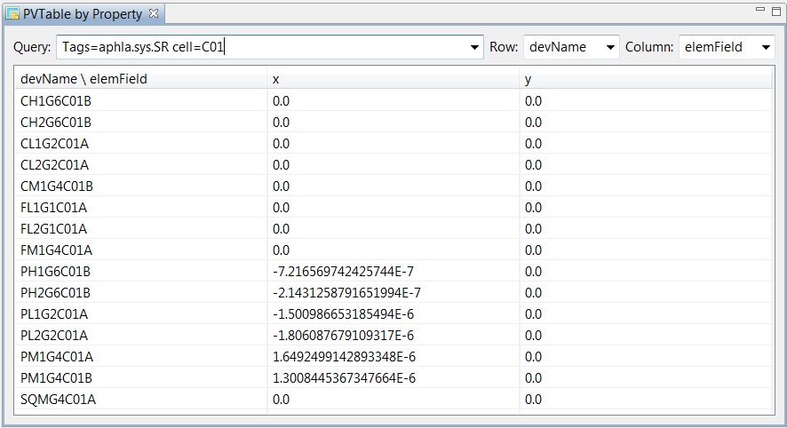
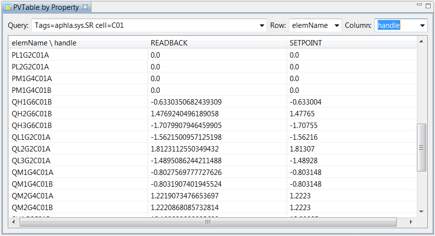

Here we have selected all the pvs in the storage ring (tagged with aphla.sys.SR) in the first cell (cell=c01). For each device name (devName for the row), we look at all the fields available for it (elemField for the column): the x position and the y position.

Here we have selected the same pvs, but we organize them by element name and handle (setpoint/readback).
